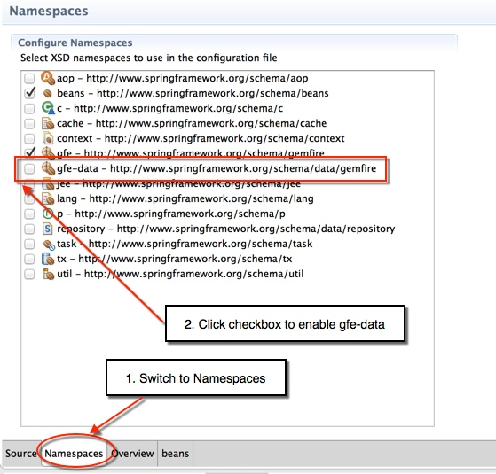

In this lab, you will gain hands-on experience working the Spring Data GemFire project to build client-side GemFire applications. These series of steps will help you appreciate simplicity of configuring GemFire clients using Spring.
What you will learn
Basic client cache configuration using Spring Data GemFire
Configuring and using the GemfireTemplate
Using the GemFire Repository interface
Registering interest using Spring Data GemFire
Estimated completion time: 45 minutes
Instructions for this lab are divided into specific sections. Each section describes the
steps to perform specific tasks. Before beginning this lab, make sure you have started the
server side processes using the startServer.sh script
(startServer.bat for Windows) in the
server-bootstrap lab folder.
In this first section, you will get a basic configuration up and running that will include setting up a client cache and defining a client region for the BookMaster region on the server.
(TODO-01) Locate and open the
spring-config.xml file under
src/main/resources folder. Notice that this is largely an empty
file at the moment. Notice also that the Gemfire namespace has been enabled with the
gfe prefix. Your first task is to configure the client pool that
is configured to point to the locator.
(TODO-02) Create a client cache definition pointing to the pool
you just defined.
(TODO-03) Define a client region and configure it as a
CACHING_PROXY
(TODO-04) Open the
BasicSpringClientTests.java file under
src/test/java. The basic structure of this test harness has
already been set up. Take a moment to get familiar with the basic way this test
harness is configured using the Spring-aware integration test. Notice also how we
injected the region into the harness using the @Resource
annotation. Usually, we use the Spring specific @Autowired
annotation but the nature of this object requires we inject it as a named bean.
(TODO-05) Finally, run the test by right-mouse clicking on the
file in the package explorer or in the open file. Then select Run As -> JUnit
Test. If you configured the spring-config.xml file
properly, the tests should pass.
In this next section, you will gain familiarity with the GemfireTemplate, one of the helper classes provided by the Spring Data GemFire project.
(TODO-06) Return to the spring-config.xml file and add a basic
bean definition to instantiate an instance of the GemFire template. You can either
inject the BookMaster region as a constructor argument or set it as
a property on the bean.
![[Tip]](images/tip.png) | Tip |
|---|---|
You will use a basic bean definition as <bean id="someName"
class="ClassToInstantiate"></bean> where |
(TODO-07) Return to the
BasicSpringClientTests class and add a definition to autowire
the GemFire template you just configured into the test harness.
(TODO-08) Locate the
testGemFireTemplate() test method and add some code to
execute a simple query on the template. Use the query() method to search for books
having an author of Daisy Mae West. Also write a couple of assert
tests to assert that you got just one result back and the title of the book was
A Treatise of Treatises.
| Tip |
|---|---|
Note that the results returned are |
Re-run the test harness and ensure the tests pass.
This section will allow you to gain familiarity with the concept of Repositories. This approach allows you to create repository (or DAO) style interfaces declaratively.
(TODO-09) Open the BookMaster class in
the com.gopivotal.bookshop.domain package. Add appropriate
annotation to the top of the class to declare that domain object is obtained from the
BookMaster region.
(TODO-10) Create a new interface in the
com.gopivotalbookshop.buslogic package that will be your
Repository interface. Make it extend the CrudRepository base
interface and set the entry type and key type appropriately for the generics part of
the definition.
In the same interface declaration, add a findBy method
declaration that will support finding BookMaster objects by the
Author attribute. The method have a single argument of type
String and return a list of BookMaster
objects.
(TODO-11) Return to the spring-config.xml
file and add an entry to configure scanning for repositories. In order to do this,
you'll first have to enable the gfe-data namespace as shown below.
|  |
(TODO-12) Return to the BasicSpringClientTests class and
add another declaration near the top of the class to autowire in your newly created
Repository interface.
(TODO-13) Next, locate the
testGemFireRepositories() method and add the necessary code
to correctly invoke the method on the repository instance. Also write a couple of
asserts to verify you get only one matching entry and the entry's title is A
Treatise of Treatises. You can use the code from the
testGemFireTemplate() method as a reference.
In this final section, you will explore the capabilities of Spring Data GemFire to
simplify configuration of CacheListeners and to enable clients to register interest in
certain keys. Since you've already performed most of the basic coding in a prior lab, all
you'll do in this lab is add the appropriate Spring Data GemFire configurations and re-run
the ClientConsumer and ClientWorker to test
the behavior out.
(TODO-14) Open the spring-config.xml file
again and locate the pool configuration. Add an attribute to enable client
subscriptions.
(TODO-15) Locate the client-region definition you created in
TODO-03. Add an entry inside this region definition to configure
a CacheListener for the region. Have it point to the
LoggingCacheListener that is found in the
com.gopivotal.gookshop.buslogic package.
(TODO-16) Finally, add another entry inside the client-region definition to
register interest in the key 999.
| Tip |
|---|---|
Note that this key is an integer type so you'll need to configure appropriately when creating the interest registration. |
(TODO-18) Open the ClientConsumer class
and take a look at the functionality implemented there. As you can see, all the class
does is initialize the Spring ApplicationContext and then wait
for the ClientWorker to perform some operations on the cache.
What you should see when that happens is that the
SimpleCacheListener will report that an entry was created and
deleted having the key 999.
Go ahead and run the class now.
(TODO-19) Next, locate the ClientWorker
class. This is basically the same class that was used in the events lab to create a
new BookMaster entry with the key 999. Run
this class. The program will start by displaying some basic information and then pause
waiting for user input to continue.
Place your cursor in the console area and hit enter. The program will now proceed to insert an entry with key 999 and the remove it before terminating.
Switch consoles back to the ClientConsumer and observe that the SimpleCacheListener reported that the entry was crated and then deleted.
Make sure that both the ClientWorker and ClientConsumer have terminated
Congratulations! You have completed this lab.